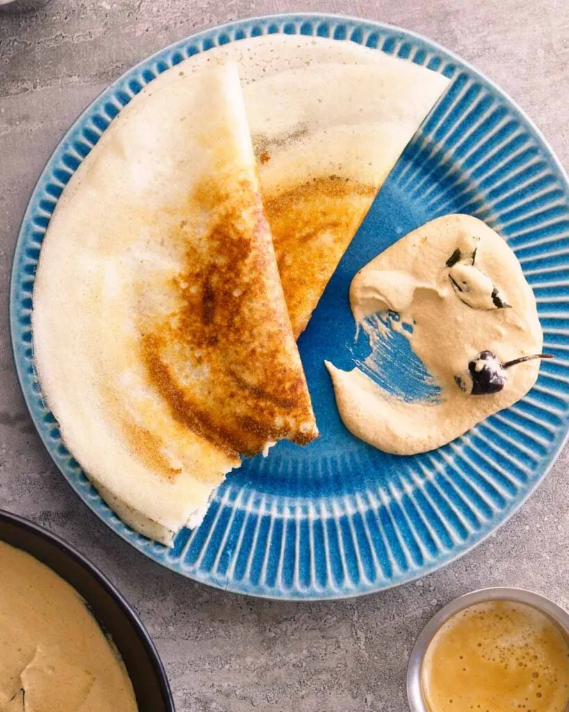

Home
Dosa Recipe

Description
A dosa is a thin, crisp pancake or crepe originating from South India, made from a fermented batter of rice and
black gram (urad dal). When properly prepared, dosas have a golden-brown exterior that's crispy and lacy around
the edges, while remaining slightly soft and chewy toward the center. They're typically served folded in half or
rolled into a cylindrical shape.
Chutney is the perfect accompaniment to dosa, providing a burst of flavor that complements the mild tanginess of
the fermented dosa. The most common chutneys served with dosa include:
1. Coconut chutney: A smooth, cooling blend of freshly grated coconut, green chilies, ginger, and tempered with mustard
seeds, curry leaves, and dried red chilies in hot oil.
2. Tomato chutney: A tangy, slightly sweet preparation made with sautéed tomatoes, onions, and spices.
3. Mint-coriander chutney: A vibrant green, herbaceous sauce with a refreshing kick from fresh mint and cilantro leaves,
green chilies, and a hint of lemon juice.
The combination creates a perfect balance of flavors and textures—the crispy, slightly tangy dosa paired with the cool,
spicy, or tangy chutney makes for a satisfying meal that's enjoyed for breakfast, lunch, or dinner throughout India and beyond.
Ingredients
Steps
Dosa Batter
- Rinse rice and urad dal separately, about 3-4 times until water runs clear
- Soak rice, urad dal, and fenugreek seeds in separate bowls of water for 4-6 hours
- Drain the water from all ingredients
- Grind urad dal and fenugreek seeds together with a little water until smooth and fluffy
- Grind rice with water until smooth but slightly grainy
- Mix both batters together in a large container
- Add salt and mix well
- Cover and let ferment in a warm place for 8-12 hours (overnight)
- The batter should rise and become slightly bubbly when properly fermented
Cooking Dosa
- Stir the fermented batter gently (add water if needed to get pouring consistency)
- Heat a flat non-stick or cast iron pan/griddle
- Test if the pan is hot enough by sprinkling a few drops of water - they should sizzle immediately
- Lightly grease the pan with oil
- Pour a ladleful of batter in the center of the pan
- Using the back of the ladle, quickly spread the batter in a circular motion to form a thin pancake
- Drizzle a little oil around the edges and on top
- Cook on medium heat until the edges start to lift and the bottom turns golden brown
- For crispy dosa, cook only on one side; for softer dosa, flip and cook briefly on the other side
Tomato Chutney
- Heat oil in a pan, add onions and garlic, and sauté until translucent
- Add tomatoes and cook until soft and mushy
- Add red chilies, tamarind paste, salt, and a pinch of jaggery
- Cook until the mixture thickens
- Let it cool and then grind to a smooth paste
Tempering
- heat oil, add mustard seeds, urad dal, and curry leaves
- Pour this tempering over the tomato chutney and mix well